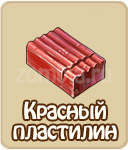

Получено: файл; исходный URL. Получены исходные байты по адресу страницы; идентичность оригинальному домену при замене хоста не подтверждена. Страница: источник.

Красный пластилин
ВКонтакте; данные из ZOMBIA; 21 Декабря 2011, 21:00- Тип
- нет данных
- Покупка
- нет данных
- Продажа
- нет данных
- Как получить
- [изображение: Китайская стена] [изображение: Китайская стена] Сделать в китайской стене: 02 +01 (ВКонтакте, ZOMBIA; требует сверки).
- Применение
- нет данных
- Особенности
- нет данных
- Версия и дата
- ВКонтакте; данные из ZOMBIA; 21 Декабря 2011, 21:00
Данные по источнику · ВКонтакте, ZOMBIA · 21 Декабря 2011, 21:00; дата редакции не установлена
Предварительно: Данные одной исторической фанатской страницы; цифры и подписи изображений требуют сверки. Описание и условия сохранены по колонкам без додумывания.. Требуется сверка.
- Описание материала
- [изображение: Красный пластилин]
- Участвует в строительстве
- [изображение: Шатёр]
- Как достать
- [изображение: Китайская стена] [изображение: Китайская стена] Сделать в китайской стене: 02 +01
- Участвует в создании
- нет текстовых данных; возможны неподписанные изображения
Данные по источнику · браузерная Зомби Ферма / Зомби Мания; платформа требует проверки · дата URL не гарантирует дату редакции
Предварительно: Индивидуальная страница прочитана автоматически, подписи значков могут содержать ошибки; даты редакции и независимость от ЗомбиСити не установлены.. Требуется сверка.
- Основной блок страницы и подписи изображений
- Материал [иллюстрация: Красный пластилин] Красный пластилин Цена покупки: 2 [иллюстрация: Зомбаксы] Цена продажи: 5000 [иллюстрация: Монеты] Продать или купить Красный пластилин можно в Обменке игры Зомби Ферма Материал игры Зомби Ферма Красный пластилин тесно связан с постройкой Китайская стена. Красный пластилин - не единственный пластилин в своем роде. Еще есть Синий и Зеленый пластилины, но их создание - это отдельная история, для которой нужны отдельные материалы. Красный пластилин можно создать в постройке: Красный пластилин [иллюстрация: Красный пластилин] = 2 Красная краска [иллюстрация: Красная краска] + 1 Нефть [иллюстрация: Нефть] [иллюстрация: Стрелка] Китайская стена [иллюстрация: Китайская стена] Иногда выпадает из яйца: Дизайнерское [иллюстрация: Дизайнерское] Красный пластилин участвует в строительстве: Пруд [иллюстрация: Пруд] Шатёр [иллюстрация: Шатёр] Хижина [иллюстрация: Хижина] Флаг Милана [иллюстрация: Флаг Милана] Ведерко [иллюстрация: Ведерко] Флаг Узбекистана [иллюстрация: Флаг Узбекистана] Снежный доступ [иллюстрация: Снежный доступ ] Приз за выполнение заданий: Флаг [иллюстрация: Флаг] Марафон 20 [иллюстрация: Марафон 20] Красный пластилин можно найти в сокровищах: Новогодняя елка [иллюстрация: Новогодняя елка] Новогодняя елка [иллюстрация: Новогодняя елка] Новогодняя елка за зб [иллюстрация: Новогодняя елка за зомбаксы] Ледяной дворец за ЗБ [иллюстрация: Ледяной дворец за ЗБ] Красный пластилин можно добыть палочками-выручалочками из декора: Палочка выручалочка [иллюстрация: Палочка-выручалочка] Желтая собака [иллюстрация: Декорация Желтая собака] Драгоценный цветок [иллюстрация: Декорация Драгоценный цветок]
Связанные сущности
- Пруд — связан со строительством или производством в Пруду — см. стадии и рецепты